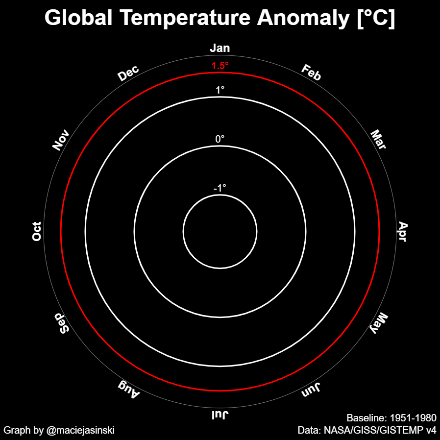

Climate Graphs
Page with graphs about climate (duh).
View the Project on GitHub
macieJasinski/climate-graphs

Click on image to view in full resolution
Data for global temperature anomalies is available here:
NASA/GISS/GISTEMP v4
.
Click on image to view in full resolution
Data for global sea surface temperature anomalies is available here:
Had SST.4.0.1.0
.
 Click on image to view in full resolution
Click on image to view in full resolution